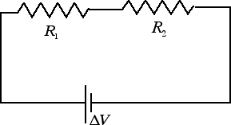
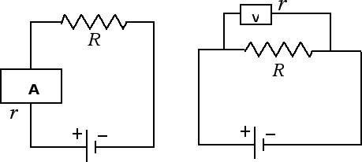

Corrente elettrica
Resistori in serie
In questa sezione vogliamo trovare la resistenza equivalente nel caso di due resistori collegati in serie, come nella figura seguente

Se colleghiamo due resistenze in serie è l'intensità di corrente ad essere la stessa in tutte le resistenze. La differenza di potenziale (o tensione) fornita dal generatore ΔV si ritrova invece in parte ai capi della prima resistenza ΔV1 e in parte ai capi della seconda resistenza ΔV2. Avremo perciò: ΔV = ΔV1 + ΔV2. La resistenza equivalente Re è data da:
Re = ΔV / i = ΔV1 / i + ΔV2 / i = R1 + R2.
Dunque nel collegamento in serie le resistenze si sommano.
Anche le potenze assorbite si sommano nel collegamento di resistenze in serie. Infatti la potenza assorbita è data da: P = i · ΔV = i · (ΔV1 + ΔV2) = P1 + P2.
Ora che abbiamo introdotto il collegamento in serie e in parallelo delle resistenze possiamo spendere qualche parola in più sugli amperometri e i voltmetri. Abbiamo già detto che gli amperometri vanno inseriti in serie mentre i voltmetri vanno inseriti in parallelo, come nella figura seguente:

Ora sia l'amperometro che il voltmetro sono dotati di una loro resistenza interna. Cerchiamo di capire come devono essere tali resistenze interne per non interferire con la misura. Cominciamo dal caso dell'amperometro: essendo inserito in serie, la resistenza equivalente è Re = R + r. Affinché la resistenza equivalente non si discosti di molto dalla resistenza R è necessario che la resistenza interna dell'amperometro sia piccola, in modo che Re ≈ R.
Diverso è invece il discorso relativo al voltmetro. Infatti affinché il voltmetro non assorba troppa corrente del circuito è necessario che la resistenza interna del voltmetro sia il più grande possibile. Un altro modo per rendersi conto di ciò è quello di considerare la formula per la resistenza equivalente quando il collegamento è in parallelo: 1 / Re = 1 / R + 1 / r. Affinché la resistenza interna del voltmetro contribuisca il meno possibile alla resistenza equivalente bisogna fare in modo che 1 / r ≈ 0. L'inverso di r è prossimo a zero solo quando la resistenza interna r, che compare al denominatore, è un numero molto grande.
Anche ogni generatore è caratterizzato da una resistenza interna, dal momento che la corrente elettrica circola all'interno del generatore. Tale resistenza interna deve essere il più piccola possibile, per evitare di avere una caduta di tensione e ritrovarci ai capi del generatore una differenza di potenziale ΔV molto più piccola della forza elettromotrice del generatore (che è data dal rapporto tra il lavoro L che il generatore è in grado di compiere per spostare una carica q al suo interno e il valore q della carica stessa).
In questa sezione abbiamo visto che lo strumento di misura altera il sistema fisico che noi vogliamo studiare. Ciò nonostante, nel caso dei voltmetri e degli amperometri, questo effetto può essere reso piccolo a piacere costruendo lo strumento di misura con resistenze interne opportune. Ci sono teorie fisiche, come la meccanica quantistica (la teoria che descrive la materia a livello microscopico) in cui invece non è possibile ridurre a piacimento l'impatto dello strumento di misura sul sistema fisico in esame. Un sistema quantistico è inevitabilmente modificato dalla sua interazione con lo strumento di misura.